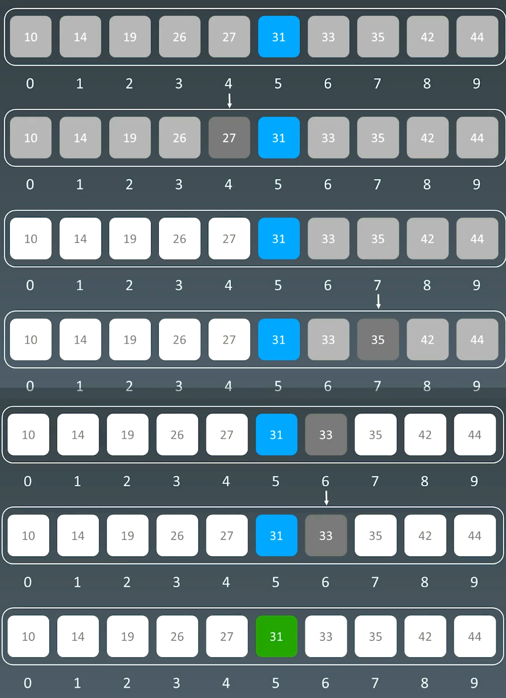
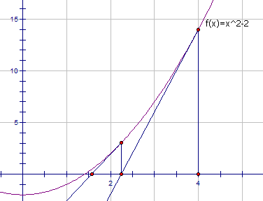

11 二分查找 | Word count: 1k | Reading time: 4min | Post View:
1.二分查找 1.1二分查找的前提
目标函数单调性（单调递增或递减）
存在上下界（bounded）
能够通过索引访问（index accessible）
1.2 代码模板 1 2 3 4 5 6 7 8 9 10 11 left, right = 0 , len (array) - 1 while left <= right: mid = (left + right) / 2 if array[mid] == target: break or return result elif array[mid] < target: left = mid + 1 else : right = mid - 1
1.3 示例 在递增数组里 [10,14,19,26,27,31,33,35,42,44] 中， 查找31

2.题目 2.1 x的平方根 69. x 的平方根 - 力扣（LeetCode）
1 2 3 4 5 给你一个非负整数 x ，计算并返回 x 的 算术平方根 。 由于返回类型是整数，结果只保留 整数部分 ，小数部分将被 舍去 。 注意：不允许使用任何内置指数函数和算符，例如 pow(x, 0.5) 或者 x ** 0.5 。
二分查找 1 2 3 4 5 6 7 8 9 10 11 12 13 14 15 16 17 18 19 20 21 22 int mySqrt1 (int x) if (x == 0 || x == 1 ) { return x; } int left = 1 ; int right = x; int ans = -1 ; while (left <= right) { int mid = left + (right - left) / 2 ; if ((long long )mid * mid > x) { right = mid - 1 ; } else { left = mid + 1 ; ans = mid; } } return ans; }
牛顿迭代法 Beyond3D - Origin of Quake3’s Fast InvSqrt()
牛顿迭代法是一种可以用来快速求解函数零点的方法。
为了方便，用 $C$ 表示待求出平方根的那个整数。显然，$C$ 的平方根就是函数$y = f(x) = x^2 - C$的零点。
牛顿迭代法的本质是借助泰勒级数，从初始值开始快速向零点逼近。我们任取一个 $x0$作为初始值，在每一步的迭代中，我们找到函数图像上的点$(x_i, f(x_i))$，过该点作一条斜率为该点导数 $f’(x_i)$的直线，与横轴的交点记为 $x {i+1}$。$x_{i+1}$相较于 $x_i$而言距离零点更近。在经过多次迭代后，我们就可以得到一个距离零点非常接近的交点。下图给出了从 $x_0$开始迭代两次，得到 x_1和 $x_2$的过程。

1 2 3 4 5 6 7 8 9 10 11 12 13 int mySqrt (int x) if (x == 0 || x == 1 ) { return x; } long ans = x; while (ans * ans > x) { ans = (ans + x / ans) / 2 ; } return ans; }
2.2 搜索选择排序数组 33. 搜索旋转排序数组 - 力扣（LeetCode）
1 2 3 4 5 6 7 整数数组 nums 按升序排列，数组中的值 互不相同 。 在传递给函数之前，nums 在预先未知的某个下标 k（0 <= k < nums.length）上进行了 旋转，使数组变为 [nums[k], nums[k+1], ..., nums[n-1], nums[0], nums[1], ..., nums[k-1]]（下标 从 0 开始 计数）。例如， [0,1,2,4,5,6,7] 在下标 3 处经旋转后可能变为 [4,5,6,7,0,1,2] 。 给你 旋转后 的数组 nums 和一个整数 target ，如果 nums 中存在这个目标值 target ，则返回它的下标，否则返回 -1 。 你必须设计一个时间复杂度为 O(log n) 的算法解决此问题。
使用二分查找：
如果target在[mid+1, high]序列中，则low=mid+1，否则，high=mid，关键是如何判断target在[mid+1, high]序列中，具体判断如下：
当[0, mid]序列是升序：nums[0] ≤ nums[mid]，当target>nums[mid] || target <nums[0]，则向后规约；
当[0, mid]序列存在旋转位：nums[0] > nums[mid]，当target<nums[0] && target >nums[mid]，则向后规约；
其他情况就是向前规约了
循环判断，直到排除到只剩一个元素时，退出循环，如果该元素和target相同，直接返回下标，否则返回-1.
1 2 3 4 5 6 7 8 9 10 11 12 13 14 15 16 17 18 19 20 21 22 23 24 25 26 27 28 class Solution {public : int search (vector<int >& nums, int target) int left = 0 ; int right = nums.size () - 1 ; int ans = -1 ; while (left < right) { int mid = left + (right - left) / 2 ; if (nums[mid] == target) { ans = mid; } if (nums[0 ] <= nums[mid] && (target > nums[mid] || target < nums[0 ])) { left = mid + 1 ; } else if (target > nums[mid] && target < nums[0 ]) { left = mid + 1 ; } else { right = mid; } } return left == right && nums[left] == target ? left : -1 ; } };